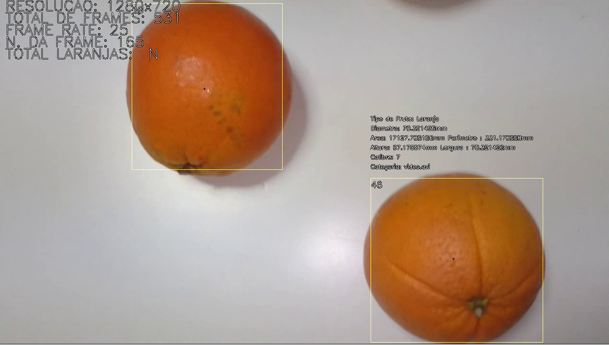
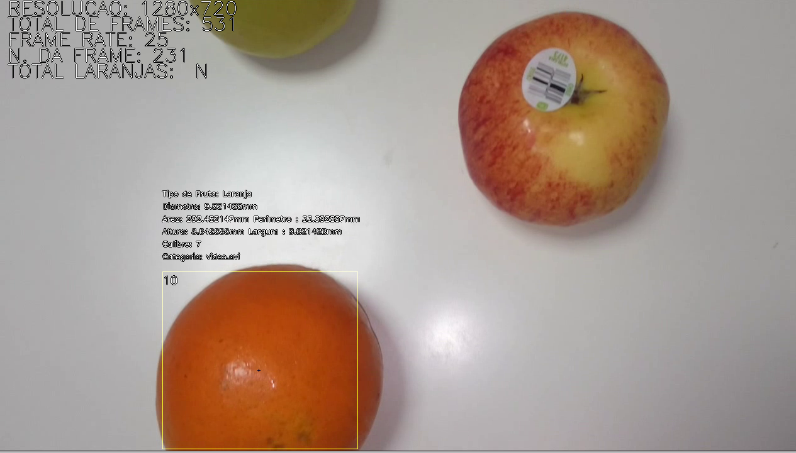

“Tell me and I forget. Teach me and I remember. Involve me and I learn.” — Benjamin Franklin
Project Overview
This project, developed as part of a Computer Vision course assignment, aimed to design an Orange Recognition System for automating tasks in a citrus fruit production line. The system focused on:
- Counting the total number of oranges
- Calculating the area and perimeter of each orange
- Identifying the location (bounding box) and center of gravity
- Measuring orange size based on caliber standards (Quality Standards for Citrus Fruits)
- Classifying oranges by quality (Commission Regulation EEC 379/71)
Key Details
- Language: C++
- Focus: Implementing algorithms manually for image processing without using pre-built libraries
- Purpose: To enhance understanding of fundamental computer vision techniques and their industrial applications
Features
- Accurate orange identification in complex scenes with other fruits
- Quality assessment and categorization based on international citrus fruit standards
- Automated measurements improving efficiency and reducing human error in production lines
Technologies
Tools & Libraries
- C++: Core programming language
- OpenCV: Image processing library (optional for exploration)
- Git & GitHub: Version control and project management
Gallery





Orange identification and segregation
Skills Developed
- Algorithm Design: Developed custom algorithms for object detection and feature extraction
- Image Processing: Applied techniques to calculate geometric properties and classify objects
- C++ Expertise: Gained deeper knowledge of manual coding for performance-critical applications
- Version Control: Used Git and GitHub to manage project changes and collaborate effectively
Outcome
This project provided an effective solution for automating quality control in citrus fruit processing. By manually developing algorithms, it highlighted the importance of a deep understanding of computer vision fundamentals and their industrial applications.